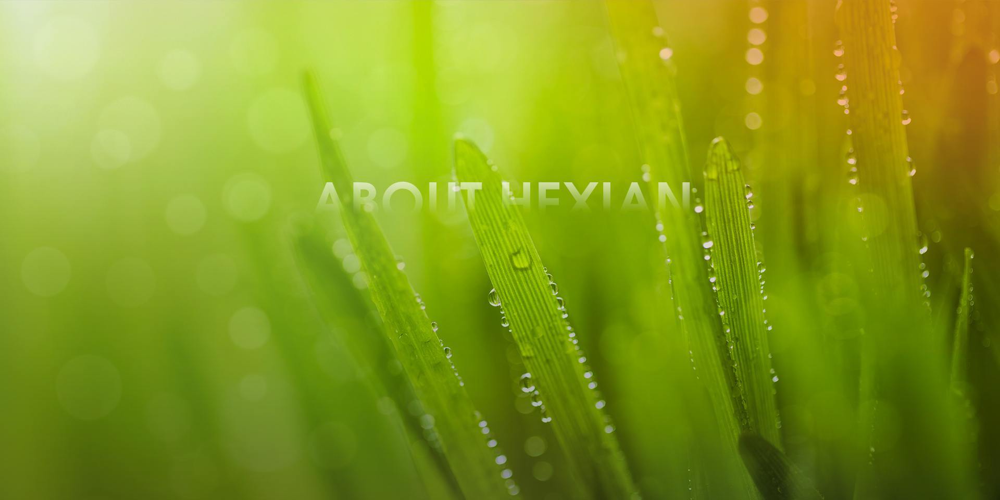

关于和鲜
“只做无添加剂健康食品”是我们一直坚守的信念，
不断创新探索，给予消费者新时代下充满质感和智慧的美食体验。
企业简介
经营理念
和鲜大事记

关于和鲜
“只做无添加剂健康食品”是我们一直坚守的信念，
不断创新探索，给予消费者新时代下充满质感和智慧的美食体验。
企业简介
经营理念
和鲜大事记
经营理念
客户第一，奋斗者为本，投资者水到渠成，承担社会责任
客户第一
坚持以客户为中心，以创造客户价值为中心。深入了解人性与客户需求，从客户需求和实际出发，
把客户利益放在互利共赢首位，增加客户互动性，提升客户信任感，提高客户忠诚度。
奋斗者为本
完善人才机制与激励体系，加快激励奖惩体系建立与健全，推进联合创始人机制运作，
坚持奋斗者为本，给予有贡献的人丰厚回报，让有情怀的人大展拳脚，
让合适的人去往合适的岗位，让每一位加盟和鲜的人都有收获、有贡献。
投资者水到渠成
以“大平台+小前端”为组织模型，坚持事业部分小单元作战。
未来，每个事业部均可以去工商登记注册办理，独立核算，独立经营，自负盈亏。
总部平台作为支持后方，全力支持各个事业部，全程数据化、精细化运营管理，最大程度的发挥现代互联网的优势。
承担社会责任
以科技创新促进企业产品转型升级，提高产品的品质与附加价值，生产绿色、
安全、健康的产品来进一步改善人民生活，
守护人民健康，让人民生活得更幸福、更美好。积极推动 “3+3 ”产业扶贫项目，
布局持续发展的绿色生态化产业，